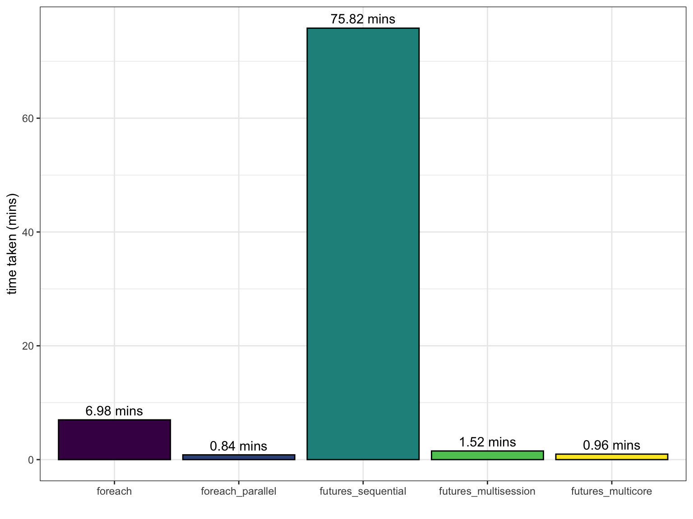

The basic seed_particles function for 1000 particles
takes ~15-16 seconds on a 2019 Macbook Pro (6-core Intel Core i7) and
~3-4 seconds on a 2023 Macbook Pro (M2 Max). The bottleneck in
processing speed comes from using sf functionality and is
difficult to improve in the R environment.
As seed_particles and other functions in
coralseed rely on random draws from Bayesian posteriors
with each run to simulate variance, iterating
seed_particles improves model estimates by incorporating
some of this variance. To scale up coralseed, each input
simulation can be run multiple times (i.e. if there are 1000 particles
as input, the results can be run 100 times to give 100,000 simulated
particles).
There are different approaches to iterating across a function in R -
either singularly (for/foreach loops)
vectorising (lapply), or in parallel
(doparallel and futures). To speed up the
results, running in parallel reduces compute times.
doParallel is a parallel backend for
foreach , using multicore functionality on Unix-like
systems and snow functionality on Windows.
futures allows for running functions
(e.g. lapply) sequentially, in parallel background
sessions, and with forked multicore approaches
In both options parallel approaches are limited by the cross-platform availability - e.g. multicore is not available on Windows or on any operating system with RStudio, which raises issues with cross-platform compatability of code.
Below is an optimisation of seed_futures (a stripped
back function combining seed_particles and
settle_particles) comparing the speed of different
approaches. The code is run on MacOS 13.4 on an M2 Max processor, so
expect this to be slower on different machines/OS.
> sessionInfo() R version 4.3.1 (2023-06-16)
Platform: aarch64-apple-darwin20 (64-bit)
Running under: macOS Ventura 13.4
The approach below imports a single geojson simulation
for 1000 particles, and then repeats the code x100 to give a 100,000
individual particles (i.e. 100 simulated particles/settlers per track).
library(tictoc) is used to time the R code in each
instance:
library(coralseed)
library(data.table)
library(foreach)
library(future.apply)
library(doParallel)
library(tictoc)
library(ggplot2)The code sections below compare five different approaches for single
core (sequential), parallel, and multicore simulations of
coralseed using foreach /
doParallel and future.apply packages:
basic example using seed_futures across 1000 input
particles
library(coralseed)
library(data.table)
library(foreach)
library(future.apply)
library(doParallel)
library(tictoc)
library(ggplot2)
seascape <- seascape_probability(reefoutline=reef_map, habitat=benthic_map)
tic()
tmp <- seed_futures(example="mermaid", input=NULL, limit_time=6.95,
seascape=seascape, silent=TRUE, set.seed=NULL,
tracks=TRUE, competency.function = "exponential",
simulate.mortality = "typeI", simulate.mortality.n = 0.1,
limit.time = 6.95, probability="additive")
toc()## 4.463 sec elapseduse foreach with %do% to loop the function
100 times
library(coralseed)
library(data.table)
library(foreach)
library(future.apply)
library(doParallel)
library(tictoc)
library(ggplot2)
tic()
tmp <- foreach(i=1:100, .packages="coralseed") %do%
seed_futures(example="mermaid", input=NULL,
limit_time=6.95, seascape=seascape,
silent=TRUE, set.seed=NULL, tracks=TRUE,
competency.function = "exponential",
limit.time = 6.95, probability="additive",
simulate.mortality = "typeI",
simulate.mortality.n = 0.1)
time_foreach <- toc()## 419.049 sec elapseduse foreach with %doparallel% to loop the
function 100 times in parallel across 11 (n-1) cores (OS and system
dependent)
library(coralseed)
library(data.table)
library(foreach)
library(future.apply)
library(doParallel)
library(tictoc)
library(ggplot2)
iters=100
ncores <- detectCores()
cl <- makeCluster(ncores-1)
registerDoParallel(cl)
tic()
tmp <- foreach(i=1:100, .packages="coralseed") %dopar%
seed_futures(example="mermaid", input=NULL, limit_time=6.95,
seascape=seascape, silent=TRUE, set.seed=NULL,
tracks=TRUE, limit.time = 6.95,
probability="additive",
competency.function = "exponential",
simulate.mortality = "typeI",
simulate.mortality.n = 0.1)
time_foreach_parallel <- toc()## 50.185 sec elapsedstopCluster(cl)use future_lapply from the future.apply
package with sequential processing. lapply applies a
function over list/vector and is run 100 times (one after another).
library(coralseed)
library(data.table)
library(foreach)
library(future.apply)
library(doParallel)
library(tictoc)
library(ggplot2)
iters=100
plan(sequential)
tic()
m1 <- future_lapply(rep("mermaid",iters), seed_futures, future.seed = NULL,
input=NULL, seascape=seascape, limit_time=6.95,
set.centre = TRUE, tracks=TRUE, silent=TRUE, set.seed=NULL,
competency.function = "exponential", limit.time = 6.95,
probability="additive", simulate.mortality = "typeI",
simulate.mortality.n = 0.1)
time_futures <- toc()## 4549.365 sec elapseduse future_lapply from the future.apply
package. lapply applies a function over list/vector, so the
input file palfrey01 is replicated here n times (iters) in
background R sessions
library(coralseed)
library(data.table)
library(foreach)
library(future.apply)
library(doParallel)
library(tictoc)
library(ggplot2)
iters=100
tic()
plan(multisession, workers = iters, .cleanup = TRUE)
m1 <- future_lapply(rep("mermaid",iters), seed_futures, future.seed = NULL, input=NULL, seascape=seascape,
limit_time=6.95, set.centre = TRUE, tracks=TRUE, silent=TRUE, set.seed=NULL,
competency.function = "exponential", limit.time = 6.95, probability="additive",
simulate.mortality = "typeI", simulate.mortality.n = 0.1)
time_futures_multisession <- toc()## 90.924 sec elapsedplan(sequential)Use future_lapply from the future.apply
package. Note - forked processing (‘multicore’) is not supported when
running seed_futures from RStudio.
Evaluate futures in parallel on the local machine via as many forked processes as available (n-1) to the current R process
library(coralseed)
library(data.table)
library(foreach)
library(future.apply)
library(doParallel)
library(tictoc)
library(ggplot2)
iters=100
plan(multicore, workers = iters) # n input files needs to equal n workers
tic()
m1 <- future_lapply(rep(method="mermaid",iters), seed_futures,
future.seed = NULL, input=NULL, seascape=seascape,
limit_time=6.95, set.centre = TRUE, tracks=TRUE,
silent=TRUE, set.seed=NULL,
competency.function = "exponential", limit.time = 6.95,
probability="additive", simulate.mortality = "typeI",
simulate.mortality.n = 0.1)
time_futures_multicore <- toc()
plan(sequential)Below is the output from the above simulations. Parallel processing
substantially speeds up processing time, with
%dopar%' returning a marginally faster result thanfuture_lapply”:
timetests <- data.frame(functions=c("foreach", "foreach_parallel", "futures_sequential", "futures_multisession", "futures_multicore"),
time=c(as.numeric((time_foreach$toc-time_foreach$tic)),
as.numeric((time_foreach_parallel$toc-time_foreach_parallel$tic)),
as.numeric((time_futures$toc-time_futures$tic)),
as.numeric((time_futures_multisession$toc-time_futures_multisession$tic)),
as.numeric((time_futures_multicore))))
timetests$functions <- factor(timetests$functions, levels = timetests$functions)
ggplot() + theme_bw() +
xlab("") + ylab("time taken (mins)") +
geom_bar(data=timetests, aes(functions, time/60, fill=functions), color="black", stat = "identity", show.legend=FALSE) +
geom_text(data=timetests, aes(x=functions, y=time/60, label=paste0((sprintf("%.2f", time/60)), " mins")), vjust=-0.5) +
scale_fill_viridis_d()